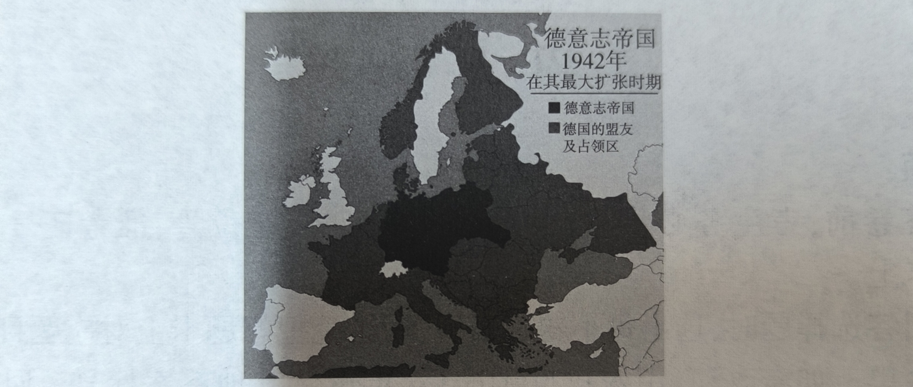

| 文明 | 主要农作物 | 核心耕作法 | 主要牲畜 |
|---|---|---|---|
| 玛雅 | 玉米、豆类 | 轮歇农业 | 无大型役畜 |
| 阿兹特克 | 玉米、南瓜 | 浮田耕作法 | 无大型役畜 |
| 印加 | 玉米、马铃薯 | 修筑梯田 | 骆马（仅限驮运） |
| 年代 | 白银年均输入量（千克） |
|---|---|
| 40 年代 | 17,500 |
| 50 年代 | 30,000 |
| 60 年代 | 94,000 |
| 70 年代 | 100,000+ |
| 80 年代 | 200,000 |
| 90 年代 | 270,000 |
| 法令名称 | 核心内容 |
|---|---|
| 《废除常备军改由国民自卫军代替的法令》 | 取消旧军队，武装人民 |
| 《废除国家机关高薪法令》 | 国家高薪金不超过熟练工人工资 |
| 《关于政权组织的法令》 | 公社委员由选举产生，可随时撤换 |

| 困境表现 | 典型案例 |
|---|---|
| 政局动荡、民族冲突 | 印巴分治、卢旺达大屠杀 |
| 经济结构单一、依赖国际市场 | 尼日利亚依赖石油、古巴依赖蔗糖 |